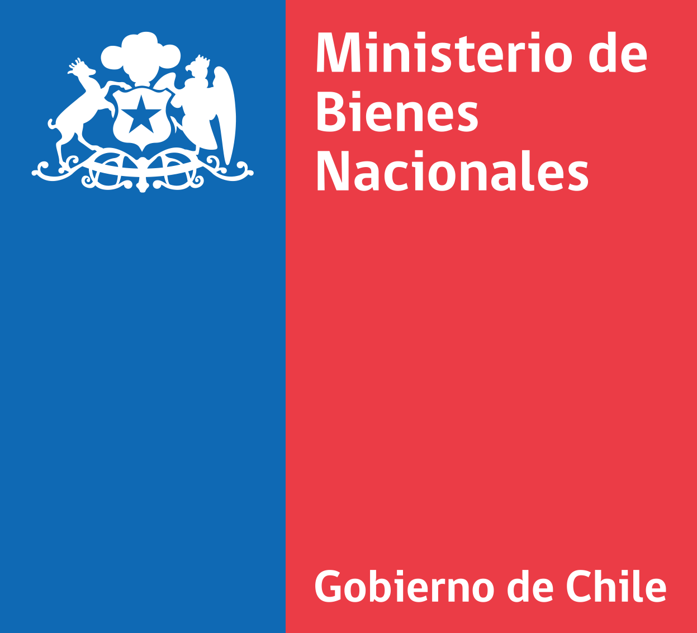

División de Planificación y Presupuesto · Unidad de Planificación y Control de Gestión

Subsecretaría de Bienes Nacionales · Unidad de Planificación y Control de Gestión
Elige qué incluir. El informe usa los filtros actuales. En la ventana de impresión, elige «Guardar como PDF».